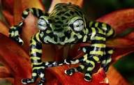

Краткое знакомство
Земноводные

Земноводные, или Амфибии (от др.-греч. amphi- [амфи] — «двоякий» и bios [би́ос] — «жизнь»)/
— первая группа позвоночных животных, освоившая наземную среду, но сохранившая тесную связь с водной.
Лягушки
Лягушки — общеупотребительное название группы животных из отряда бесхвостых земноводных./
В широком смысле термин «лягушка» относится ко всем представителям отряда бесхвостых. /
В узком смысле это название применяется /
по отношению к представителям семейства настоящих лягушек. Личинки лягушек называются головастиками..
Отличия от жаб
У лягушек обычно гладкая кожа и длинные лапки — для того чтобы удобнее было прыгать./
У жаб лапки короткие, кожа пупырчатая, а тело короткое и приземистое. Но главное отличие лягушек в том,/
что у них нет крупных околоушных желез, располагающихся у жаб в задней части головы и характерных/
для жаб бородавок./
Жабы, в отличие от лягушек, откладывают икру парным шнуром. /
Такой шнур может достигать в длину до 10 метров, в нем обычно бывает от 1200 до 6840 яиц,/
упакованных в 2—4 ряда./
Икряной шнур запутывается среди подводной растительности или просто лежит на дне до тех пор,/
пока не придет пора появиться головастикам на свет.
Семейства лягушек
В данном разделе автор рассказать о таких семействах бесхвостых земноводных как настоящие лягушки, квакши, узкоротоы и др, а также об их интересных представителях
Основные подсемейства настоящих лягушек: жабовидные;
щиткопалые;
настоящие;
африканские лесные;
карликовые;
дископалые.
Квакши

Квакшами, или древесницами называют лягушек, обитающих на деревьях. С одной стороны они близки к лягушкам настоящим, ведущим наземный образ жизни.В связи с таким специфическим образом жизни среди квакш преобладают животные небольшого размера. Самая маленькая из них, миниатюрная литория, достигает в длину всего 1,6 см, самая большая длинноногая литория вырастает до 13,5 см. Форма тела у квакш тоже может быть разной. Одни виды имеют массивное, словно обрюзгшее тело, другие выглядят как аккуратненькие крошечные лягушечки, у третьих туловище уплощено, а лапки похожи на поломанные палочки. Однако всех квакш объединяет общий признак — концы пальцев и у них сплющены и похожи по форме на маленькие диски. Такие пальчики действуют как присоски и удерживают квакшу на гладкой поверхности листьев. Присасывающая сила дисков настолько велика, что квакши без малейших усилий могут держаться не только на горизонтальных и наклоненных поверхностях, но даже и на вертикальных (например, на стекле террариума) или вверх брюшком.
Тигровая лягушка

Тигровая древесная лягушка (Phyllomedusa tomopterna) или обезьяна с тигровыми ногами (Tiger-leg Monkey Frog) — лягушка, проживающая в тропических лесах Амазонки, болотах, очень влажных и теплых местах обитания. Встречается в Боливии, Бразилии, Колумбии, Эквадоре, Гайане, Перу, Венесуэле. Предпочитает нетронутые лесные места обитания, поэтому очень чувствительны к вырубкам леса. Тигроногая лягушка-обезьяна — очень привлекательная и интересная амфибия, которая содержится в неволе. Свое название получила благодаря полосам на задних лапках и вдоль тела, а также была названа обезьяной за манеру передвигаться «шагая» вместо прыжков."
Красноглазая квакша

Красногла́зая ква́кша — древесная лягушка из семейства Phyllomedusidae. Видовое название callydryas происходит от греческих слов др.-греч. καλός, что означает «красивый», и др.-греч. δρυάς — «древесная нимфа».Свое название получила благоваря ярко-красной окраске белков глаз
Рогатые лягушки или итаннии
Лягушки-рогатки обладают круглым, широким телом и короткими ногами, за что получили свое прозвище "pac-man". Достигают 12-15 см в длину. Особенно впечатляюще выглядит голова: она увенчана наростами («рогами»), рот — очень широкий (распахивается почти на ширину тела), с острыми зубками.